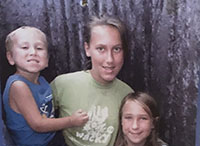
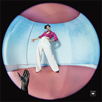

Hello, world! My name is Morgan.
This is a webpage all about me, My likes, dislikes, hopes, dreams, and favorite things.
Biography
I am 16 years old and a current Junior in High School. I grew up with 2 siblings, an older sister (Elizabeth, 19) and a younger brother (Isaac, 11). My family has 2 dogs. Joy, who is a German Shepherd-Terrior mix, and Jay, who is a Husky-Lab mix. I am an early college student at our local community college. I am currently taking a sociology class through the college along with my other classes through my high school.
In my spare time I enjoy listening to music, watching tv, and driving. Although I don't yet have my Driver's License, I have my Driver's Permit and can drive as long as there is a Licensed driver, that has had their full license for at least 5 years, in the front seat.
My Favorite Quotation
"I'm intimitated by the fear of being average" - Taylor Swift
My Favorite Foods
- Mac and Cheese
- Cheese burgers
- Tacos
- Chicken Nuggets
My Top 8 Favorite Movies and TV Shows, in order
- Gilmore Girls
- Gilmore Girls: A Year In The Life
- Taylor Swift: Miss Americana
- Taylor Swift: Reputation Stadium Tour
- F.R.I.E.N.D.S
- Life As We Know It
- The Vampire Diaries
- Greys Anatomy
Countries I'd like To Visit and What Cities I'd Like To See There
- England
- London
- Manchester
- Cambridge
- Greece
- Athens
- France
- Paris
| Favorite Flower | Red Rose | |
|---|---|---|
| Favorite Time of Day | Sunset | |
| Favorite Male Singer | Harry Styles | |
| Favorite Female Singer | Taylor Swift | |
| Favorite Songs | Falling by Harry Styles |  |
| Favorite Color | Light Blue |
Contact Information
Email: morgan@gmail.com
Phone: (704)111-1123